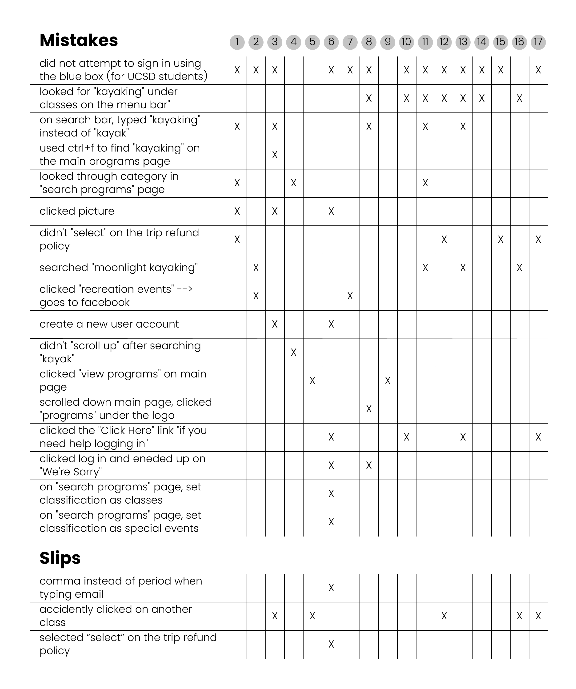
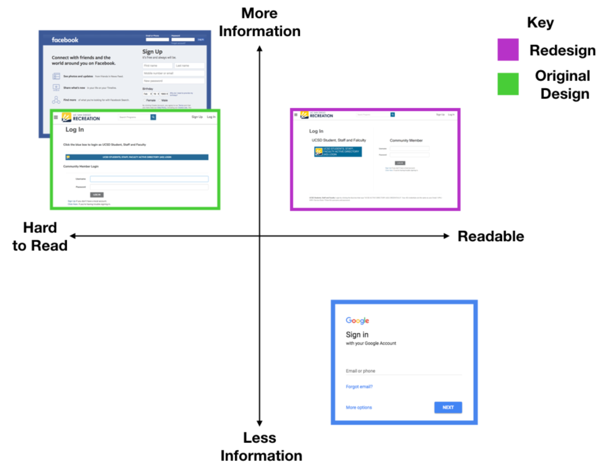
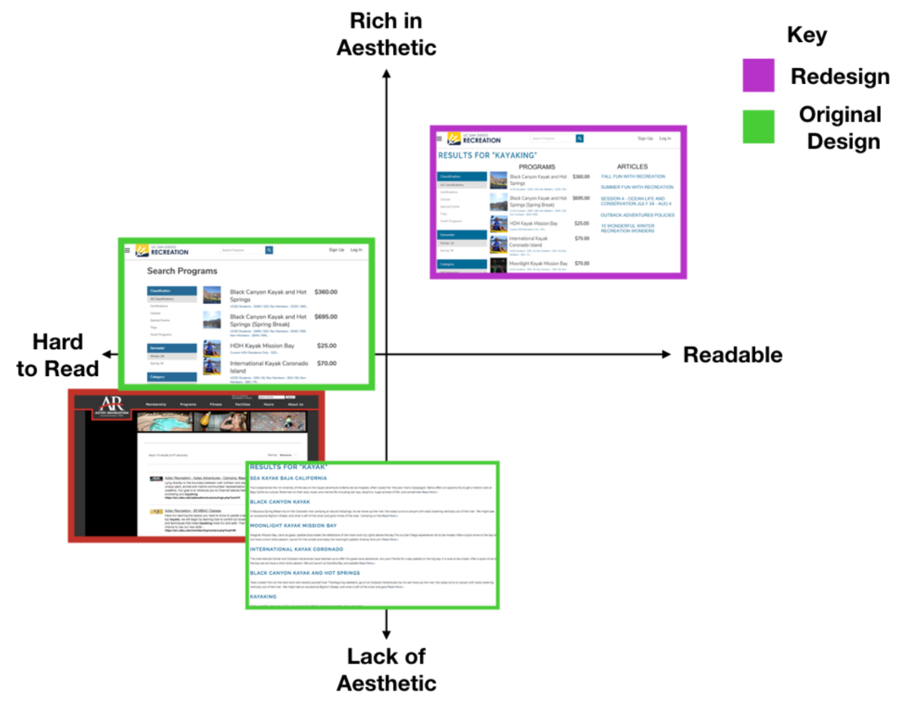

Interviews
Location: Geisel Library because we wanted to see how different types of students interact with the website. At the library we believed we would find a range of students, starting from those who rarely take a UCSD recreation class to those that frequently take them. This is in opposition to interviewing at RIMAC gym where the majority are more likely to frequent the UCSD Recreation website.
Task: Add a "Moonlight Kayak" trip to the shopping cart.
Recording Method: we collected the interviewees interaction with the website by recording our laptop screens, while having someone note slips and mistakes in a notebook as well. This made it easier to provide evidence of the slips and mistakes that students made.
Post Interview QuestionsThe Data
 Additional NotesError Analysis
Knowledge-Based Mistakes
To login, 76% of students incorrectly insterted their username and password in the indicated fields. They failed to notice that they were trying to login as a community member. This is a knowledge-based mistake because they didn't know that they needed to click the blue box to login and kept trying to login through the community member login. The blue box, and the written statements in the blue rectanges are not good enough signifiers for users to notice it so they lacked an important piece of information to successfully login as a UCSD student. Interviewees noted how the blue box is a bad signifier because it blends in with the page--looking more like a title header then a clickable login link.
Rule-Based Mistakes and Slips
29% of interviewees typed "kayaking" in the search bar when trying to find the Moonlight Kayak event. When they pressed enter to find a result, no results showed because the pages searching algorithm is very specific. This is an example of a rule-based mistake because the students had the correct intentions but typing in "kayaking" instead of "kayak" is incorrect when using this search bar.
One interviewee inserted the dashes between the numbers. Formatting it this way was incorrect and was said to be an invalid phone number because you are just supposed to have numbers. This is a rule-based mistake because the student had the correct end goal but didn't correctly input the phone number. They had the right intentions and thought they knew how to correctly input their phone number but the way they did it wasn't the way it should have been done.
When an interviewee was typing their email, they accidentally put a comma instead of a period before "edu". This is an action-based slip because they meant to put a period but ended up putting a comma. The student had the correct plan but made the wrong action.
Trends
We saw that people had the most trouble with the login page. Most of the students tried to login from the community member login. A lot of students failed to notice and click on the blue box that is meant for UCSD students. After having trouble logging in, this led to some students clicking on the "Click Here" link next to "if you need help logging in". This resulted in an error since they already had an account.
Current Design Tradeoffs
Organization and UnderstandingOne potential tradeoff is between organization and understanding, in particular, the categorization of classes into categories and the user comprehension of the categorization. Multiple interviewees attempted to use the left sidebar on the Programs page of the UCSD Recreation website, which includes organization by classification, semester, and category. Under these branches are sub-branches that include "aquatics", "kayaking", and simply "sports." Although these general terms likely follow universal definitions, confusion can still occur between the conceptual and mental models. These categories were likely created in order to help the user rapidly navigate to a specific program. However, this efficiency may not be achived if the user doesn't follow the creator's idea of the way the groups were created and may result in errors.
Design Space
76% of our interviewees had a problem with the login screen. The readability of the login screen presented a major problem: the login button for UCSD users blended too much with the page. For redesign inspiration, we looked at the Google and Facebook login pages. Google seemed to aim for an easy-to-read, limited login screen whereas Facebook opted for a highly compled, hard-to-read login. We aimed for somewhere between the two.
We separated the UCSD login from the non-UCSD login through a vertical divide as opposed to a horizontal, as people thought the UCSD login box was a header for the login. The vertical split keeps the same information on the page while making it much more readable.
Around half of our interviewees made an error on the recreation site's search page. People would search "moonlight kayaking" and the results would only return articles or events that contained the exact string "moonlight kayaking" in it.
After looking at the SDSU recreation site, we saw that it searched for different forms of the word ("kayak" will return results containing "kayak", "kayaks", "kayaking", etc.), but it lacked aesthetic and was hard to read. We wanted to make a page that was easy to read, had good aesthetic, provided good feedback as to what the user searched, and had an algorithm that would return the most relevant results.
Redesign
For the home page, our main redesign involves the menu bar. We decided to discard the registration, classes, adventures, and schedule tabs. We removed the "schedule" and "registration" tabs because our interview data suggested that they were unnecessary. The "schedule" tab led to a page without any sort of schedule and only 1/17 interviewees clicked the tab in attempt to schedule the "moonlight kayak trip". Similarly, the "registration" tab was never clicked by the interviewees, so we decided that it didn't need to be on the menu bar. Our redesign also includes the replacement of the "classes" and "adventures" tabs with "indoor activities" and "outdoor activities". We made this decision based on the fact that many knowledge-based mistakes were made when our interviewees were looking for "kayaking" under the "classes" tab instead of "adventures". The current categorization is confusing because it isn't common knowledge as to what UCSD recreation lists as a class versus an adventure. By categorizing the activities by indoor and outdoor, we will be able to reduce error. The categorization of indoor and outdoor is much easier to navigate because most activities are either traditionally done indoors or outdoors and is pretty universally accepted as so. If the activity can be done both indoors and outdoors, we would have that activity listed under both tabs to avoid confusion.
Part 1: We redesigned the page that appears once the user clicks on "kayaking" through the "indoor activities" tab. We discarded the menu bar that had the four unnecessary tabs (registration, group adventures, leader training, and risk management). These tabs aren't useful to the user when they are looking for their desired activity. By deleting that menu bar, we were able to move the rest of the page contents upward, so when the page first opens the user will be able to see an aesthetic picture of the activity and the name of the activity, which was previously hidden due to the menu bar taking up space. By having the title visible, the user knows exactly what page they are on, which reduces the mistake of users leaving the page because they believe they are on the wrong one.
Part 2: As the user scrolls down the page, our redesign includes pictures of the offered activities with their titles below. We wanted to emphasize the pictures because many of our interviewees noted how they liked them and found them as good representations of the activity. We also decided to hide the information about the activity to allow for easier readability of the entire list, which we discuss as being in our ideal design space. So unless the "+" is clicked, the user will not have to go through information about an activity that they don't wish to read about.
Part 3: When the user clicks the "+" for more information, the activity details will be revealed and thhe maximize function ("+") will change to a minimizing function ("-"). The most important thing we changed on this page to reduce error was to delete the "check availability" link. This was previously the only link provided to the user, so they would click it because they had nowhere else to click to schedule a trip. However, this link didn't lead to the "program details" page, so when clicked it leads to a knowledge-based mistake because the user didn't have a clear conceptual model as to further their registration process. By removing this link, this signifies to the user that the link to the "program details" page isn't in the activity details text, but is the activity title itself.
Once the user has chosen their activity, they will click on the activity title or the picture and will be led to a "program details" page about the activity they have chosen. Our first fix was to place an emphasis on the different prices offered for the same activity based on who you are. In the current design, they have the highest price next to the activity title, which might turn people away if they think it's too expensive, when they might actually be able to pay a lower price. Next we edited the program offerings list by altering the color pattern. Instead of the current design's alternating color pattern, we decided to dim the offerings that have already expired or have closed registration by coloring the box gray. We also attempt to signify that you can no longer sign up for that activity by making the registration expiration text red.
Another way of searching for a program is if the user uses the search bar. In the current design, the search results will differ depending on if you search on the "UCSD Recreation" website, which gives you articles, versus the "UCSD Rec" website, which gives you programs. We link these two search results together because if you start your search on "UCSD Recreation" you will eventually end up on "UCSD Rec", and if you start on "UCSD Rec", you will miss out on some of the information that "UCSD Recreation" provided. By combining the two search results, we hope to avoid confusion for the user who might not know the difference between the two sites.
This is the most important part of the redesign because it is in attempt to reduce an error that happened for 76% of our interviewees. This knowledge-based mistake was the interviewee attempting to sign in by typing in their username and password into the "community member" login. This was a pretty significant and frustrating error for our interviewees, and many of them ended up getting stuck at this part of the process for a short period of time. Many noted how in the current design, it is very easy to overlook the text saying to click the blue box if you are associated with UCSD because your eye is immediately drawn to the standard login boxes. To avoid this mistake, we have made one half of the page a UCSD login and the other half a community member login. So by having the two logins side by side instead of stacked on top of each other with the login box looking like a simple text box or header, this will signify to the user that if they are associated with UCSD they can click the blue box to login.
Conclusion
It was really fun getting to do a thorough analysis of this website. The process helped me to better understand slips and mistakes and how we can minimize them, as well as the importance of doing user testing and interviews. Without doing interviews, we would not have been able to collect the data needed to help us identify ways to improve this website. After this project, I hope to continue to think about and implement design principles in my future projects.